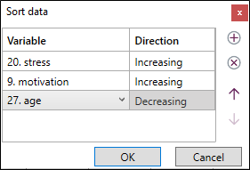
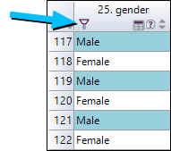

SORTING, FILTERING, SPOTTING OBSERVATIONS
Sort and filter observations
The function of sorting and filtering allows you to modify the order of the display of observations in the spreadsheet.
To sort the observations of a variable in the ascending or descending order, proceed as follows:
-
Select the corresponding column in the spreadsheet.
-
Set an order of sorting from the button Sort on the Home tab.
To set a more custom mode of sorting, proceed as follows:
-
Click Sort, then Custom sort.
-
Select the variable to be sorted on, and the sorting direction.
-
Click on to add a new sorting and on to delete a sorting.
The sorting is done first on the first variable chosen then in function of the second...

Spot observations
To spot observations, which means to make them more visible in the screen by coloring the cells of the spreadsheet, proceed as follows:
-
Click on the Spotbutton, from the Hometab.
-
Click on to create a new condition.
-
Choose the spotting option to use:
-
a profile of observations,
-
non-responses (blank cells),
-
a particular word,
-
a list of observations,
-
-
Define the coloring conditions of the cells (text color, background color, coloring of the full row or only of the cell).
EXAMPLE:
We are looking for all the male respondents, for this we define a profile to spot as the variable corresponding to the gender of respondents takes the value « MALE »Otherwise, it is also possible to add a filter on one variable to display only the observations you wish to visualize. For this, click on the filter button of the column on which you want to add a filter.
